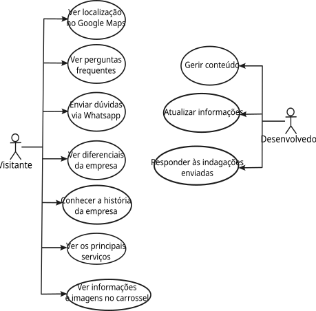
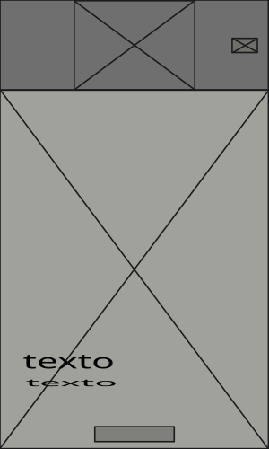
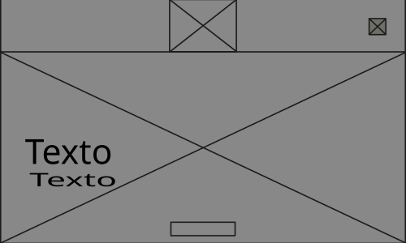
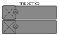
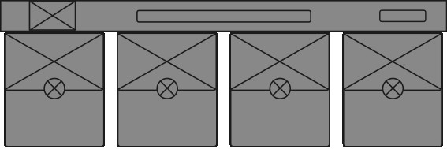

Projeto Integrador
Engenharia de Software
Projetando e documentando
A Empresa e sua História

A trajetória:
Origem e Fundação: Os irmãos José e Jorge Berretta começaram a trabalhar na infância e, em 1977, fundaram a Autopeças Mecânica São Jorge em um pequeno galpão na Vila Daniel
Crescimento e Inovação: Com quase 50 anos de história, o negócio expandiu (estando desde 2007 na Avenida João Miziara), tornou-se referência regional na manutenção de caminhões e acompanhou toda a evolução tecnológica do setor — da mecânica manual à era digital.
Impacto Local: Mais do que uma empresa, a oficina gerou empregos, formou profissionais e criou laços profundos com a comunidade.
Mapa Mental

Requisitos
Funcionais
- O site deverá exibir um mapa de como chegar à oficina.
- O site deverá apresentar as perguntas frequentes.
- O site deverá exibir link para whatsapp, telefone e localização.
- O site deverá exibir os diferenciais da empresa (em relação aos concorrentes).
- O site deverá exibir uma seção “Sobre nós”.
- O site deverá formar a página “Home” com um carrossel abaixo do header
- O site deverá exibir os nossos (principais) serviços
Não Funcionais
- O site deverá ser responsivo e adaptável a diferentes dispositivos.
- O site deverá ter um tempo de carregamento inferior a 3 segundos.
- O site deve levar em consideração oscilações de rede (3G/4G).
Objetivo do Projeto
Desenvolver uma landing page para a oficina mecânica com o objetivo de atrair clientela, que permita apresentar a empresa, divulgar seus serviços, exibir informações de contato e possibilitar que os usuários solicitem orçamentos ou agendem atendimentos de maneira simples e intuitiva.
Diagrama UML
Representação do fluxo de dados do sistema.

Tecnologias Utilizadas
O que é SMIL?
Synchronized Multimedia Integration Language, ou Linguagem integrada de multimídia sincronizada.
Baseada em hipertexto, usando XML, controla diversos tipos de mídia para Web.
Design Digital
Identidade e Visual
↓
A logo
Logo atual
Logo recriada
Criação da Logo
- Elementos simbólicos:
- Escudo representando a segurança
- A engrenagem
- O caminhão
A animação
- SVG como animação
- Escala, rotação e opacidade
- Gradiente em movimento
Decomposição cromática do logo

Aplicações da logo

Monocromática negativa

Monocromática positiva
Tons de cinza
Quadricromia
Wireframes
Home


Serviços


Conceito de GRID
DESKTOP
Conceito de GRID
Mobile Retrato e Paisagem
Desenvolvimento Web
Interatividade e Responsividade
↓
Mapa mental - organizado o site:
Descrições adaptáveis
ACCORDION (FAQ)
A semântica
Uso de tags semânticas (header, nav, main, section, footer) para melhorar a acessibilidade e o SEO do site.
Padronização
Aplicação de padrões de design e codificação para manter a consistência visual e funcional em todas as páginas.
Centralização de estilos globais através de variáveis CSS declaradas no root.
Responsividade
Desenvolvimento focado na experiência do usuário e na adaptação do layout para diferentes dispositivos.
Uso da tag picture para renderizar imagens responsivas de acordo com a resolução da tela.
Controle de proporção visual através da propriedade aspect-ratio do CSS.
Otimização de desempenho e redução da carga de rede com o uso do formato moderno WebP.